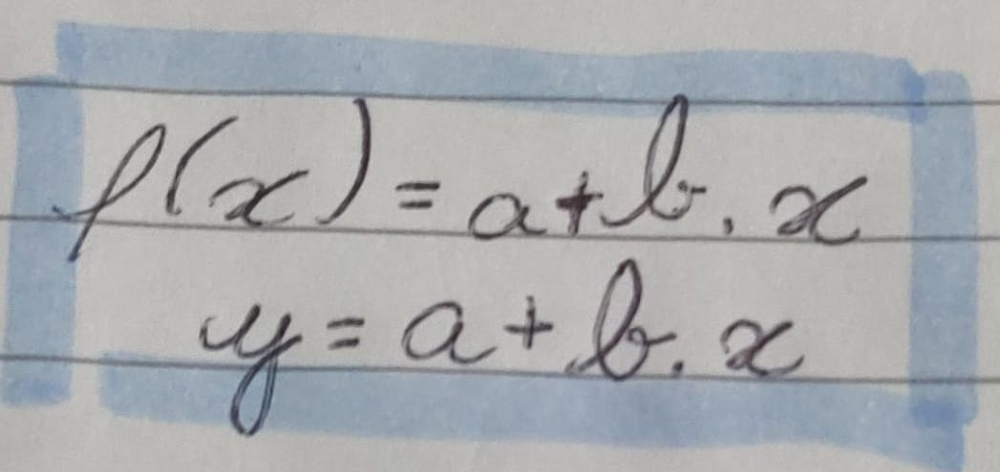

crescente a > 1
Ex.:
f:y = 2x

decrescente a < 1
Ex.:
f:y = (1/2)x

Exemplo de exercicio:
.jpeg)
| Início | 1° trimestre | 2° trimestre | 3° trimestre | Avaliação |
ATALHOS
Função AfimNeste trimestre terminamos as funçõe afins e aprendemos funções quadráticas, funções exponenciais e logaritmos
É usado quando um valor depende de outro existindo uma relação de dependência
a expressão matemática é:

a e b- valores
x - é a variável independente
y ou f (x)- variável dependente
Ex.:supondo que em uma pequena indústria temos um custo fixo de 40,00 reais e um custo variável de 1,00 real por unidade produzida.
a função já elaborada é f(x) 1,00.x+40,00
então para sabermos o custo de 50 peças substituímos o x pelo valor
f(x) = 1,00*50+40 dando assim 450 reais
Para aprendermos o conteúdo de funções, fizemos um trabalho no Scratch, uma máquina de funções onde deveríamos elaborar algo para enviar para a professora.
a - taxa de variação
a ≠ 0
b-onde o gráfico corta o eixo y
função crescente: a > 0
função decrescente: a < 0
função constante: a = 0

Passos:


Bem como o nome diz a função exponencial tem a variável no expoente
ela pode ser crescente ou decrescente.
crescente a > 1
Ex.:
f:y = 2x
decrescente a < 1
Ex.:
f:y = (1/2)x
Exemplo de exercicio:

Como calculamos:

Exemplo possíveis e não possíveis:

ou seja, para logaritmo precisamos de
b > 0, a > 0 e a ≠ 1
Saindo dos meus planos acredito que esse trimestre meu rendimento caiu, também por ser um conteúdo mais dificil não consegui compreender
ele corretamente tendo mais dificuldade nas aulas, vejo que a elaboração do portfólio contribui para entender melhor a matéria mas ainda
ficam algumas lacunas no aprendizado.
Acredito que a dificuldade no entendimento do contéudo tenha afetado o meu portfólio deixando ele com lacunas e não
abordando os conteúdos corretamente.
O que mais senti falta esse trimestre foi a parte mais "teórica" do conteúdo escrito no caderno, no 1° trimestre consegui conseguido
manter essa organização melhor e acreditei não ser tão necessario no 2° trimestre e que conseguiria aprender somente escutando
as explicações, como percebi não ser eficaz somente escutar e que escrever é importante pro meu aprendizado pretendo
retomar com minhas anotações 3° trimestre.
Aqui você pode acessar as referêcias:Referêcias
Ir para o início da página
Ir para página inicial